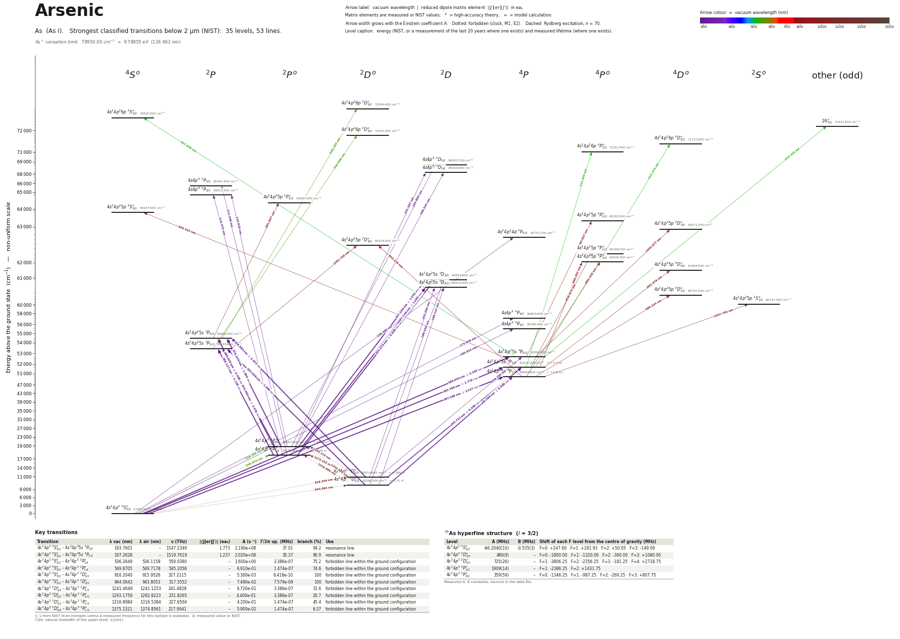

Arsenic energy level diagram
Energy levels and transitions of neutral arsenic (As I): the 53 strongest classified lines below 2 µm from the NIST Atomic Spectra Database and the 35 levels they connect, each line with its vacuum wavelength, frequency and, for 14 of them, the reduced dipole matrix element derived from the NIST transition rate. Measured lifetimes, transition rates, hyperfine constants and isotope shifts from the literature are included, each with its citation.
Hover a line or a level to isolate it, click to keep it selected. Scroll to zoom, drag to move.

Download: diagram (PDF) diagram (SVG) transitions (CSV) levels (CSV) source code

Key transitions of arsenic
| Transition | λ vac (nm) | λ air (nm) | ν (THz) | |⟨J‖er‖J′⟩| (ea₀) | A (s⁻¹) | Γ/2π up. (MHz) | branch (%) | Use |
|---|---|---|---|---|---|---|---|---|
| 4s24p3 4S°3/2 – 4s24p25s 4P3/2 | 193.7601 | – | 1547.2349 | 1.773 | 2.190e+08 | 37.01 | 94.2 | resonance line |
| 4s24p3 4S°3/2 – 4s24p25s 4P1/2 | 197.2628 | – | 1519.7619 | 1.237 | 2.020e+08 | 35.37 | 90.9 | resonance line |
| 4s24p3 4S°3/2 – 4s24p3 2P°3/2 | 536.2649 | 536.1158 | 559.0380 | – | 1.600e+00 | 3.386e-07 | 75.2 | forbidden line within the ground configuration |
| 4s24p3 4S°3/2 – 4s24p3 2P°1/2 | 549.8705 | 549.7178 | 545.2056 | – | 6.910e-01 | 1.474e-07 | 74.6 | forbidden line within the ground configuration |
| 4s24p3 4S°3/2 – 4s24p3 2D°5/2 | 916.2040 | 915.9526 | 327.2115 | – | 5.300e-03 | 6.418e-10 | 100 | forbidden line within the ground configuration |
| 4s24p3 4S°3/2 – 4s24p3 2D°3/2 | 944.0642 | 943.8053 | 317.5552 | – | 7.490e-02 | 7.579e-09 | 100 | forbidden line within the ground configuration |
| 4s24p3 2D°3/2 – 4s24p3 2P°3/2 | 1241.4649 | 1241.1253 | 241.4828 | – | 6.720e-01 | 3.386e-07 | 31.6 | forbidden line within the ground configuration |
| 4s24p3 2D°5/2 – 4s24p3 2P°3/2 | 1293.1759 | 1292.8223 | 231.8265 | – | 4.400e-01 | 3.386e-07 | 20.7 | forbidden line within the ground configuration |
| 4s24p3 2D°3/2 – 4s24p3 2P°1/2 | 1316.8984 | 1316.5384 | 227.6504 | – | 4.200e-01 | 1.474e-07 | 45.4 | forbidden line within the ground configuration |
| 4s24p3 2D°5/2 – 4s24p3 2P°1/2 | 1375.2321 | 1374.8561 | 217.9941 | – | 5.900e-02 | 1.474e-07 | 6.37 | forbidden line within the ground configuration |
λ, ν from NIST level energies unless a measured frequency for this isotope is available. A: measured value or NIST. Γ/2π: natural linewidth of the upper level, 1/(2πτ).
75As hyperfine structure (I = 3/2)
| Level | A (MHz) | B (MHz) | Shift of each F level from the centre of gravity (MHz) |
|---|---|---|---|
| 4s24p3 4S°3/2 | -66.2040(10) | -0.535(3) | F=0: +247.60 F=1: +181.93 F=2: +50.05 F=3: -149.09 |
| 4s24p3 2D°3/2 | 480(9) | – | F=0: -1800.00 F=1: -1320.00 F=2: -360.00 F=3: +1080.00 |
| 4s24p3 2D°5/2 | 725(26) | – | F=1: -3806.25 F=2: -2356.25 F=3: -181.25 F=4: +2718.75 |
| 4s24p3 2P°1/2 | 1909(14) | – | F=1: -2386.25 F=2: +1431.75 |
| 4s24p3 2P°3/2 | 359(59) | – | F=0: -1346.25 F=1: -987.25 F=2: -269.25 F=3: +807.75 |
Measured A, B constants; sources in the data file.
Listed As transitions below 2 µm
| Lower level | Upper level | λ vacuum (nm) | λ air (nm) | ν (THz) | Type | |⟨J‖er‖J′⟩| (ea₀) | A (s⁻¹) | Branching (%) | Source of matrix element / A |
|---|---|---|---|---|---|---|---|---|---|
| 4s24p3 4S°3/2 | 4s24p24d 4P5/2 | 159.3598 | – | 1881.2306 | E1 | – | – | – | – |
| 4s24p3 4S°3/2 | 4s4p4 4P3/2 | 175.8594 | – | 1704.7278 | E1 | – | – | – | – |
| 4s24p3 4S°3/2 | 4s4p4 4P5/2 | 180.6150 | – | 1659.8429 | E1 | – | – | – | – |
| 4s24p3 4S°3/2 | 4s24p25s 4P5/2 | 189.0434 | – | 1585.8392 | E1 | 2.307 NIST | 2.660e+08 NIST | – | NIST ASD (accuracy C+) |
| 4s24p3 4S°3/2 | 4s24p25s 4P3/2 | 193.7601 | – | 1547.2349 | E1 | 1.773 measured | 2.190e+08 measured | 94.2 | Bengtsson, Berzinsh, Larsson, Svanberg, Astron. Astrophys. 263, 440 (1992), Table 2 |
| 4s24p3 4S°3/2 | 4s24p25s 4P1/2 | 197.2628 | – | 1519.7619 | E1 | 1.237 measured | 2.020e+08 measured | 90.9 | Bengtsson, Berzinsh, Larsson, Svanberg, Astron. Astrophys. 263, 440 (1992), Table 2 |
| 4s24p3 2D°3/2 | 4s24p25s 2D3/2 | 199.0355 | – | 1506.2263 | E1 | – | – | – | – |
| 4s24p3 2D°3/2 | 4s24p25s 2D5/2 | 199.1139 | – | 1505.6327 | E1 | – | – | – | – |
| 4s24p3 2P°1/2 | 4s4p4 2D3/2 | 199.5430 | – | 1502.3949 | E1 | – | – | – | – |
| 4s24p3 2D°5/2 | 4s24p25s 2D5/2 | 200.3992 | 200.3344 | 1495.9764 | E1 | – | – | – | – |
| 4s24p3 2P°3/2 | 4s4p4 2D5/2 | 200.9840 | 200.9191 | 1491.6234 | E1 | – | – | – | – |
| 4s24p3 2P°3/2 | 4s4p4 2D3/2 | 201.3973 | 201.3323 | 1488.5625 | E1 | – | – | – | – |
| 4s24p3 2P°1/2 | 4s4p4 2P1/2 | 211.3660 | 211.2991 | 1418.3571 | E1 | – | – | – | – |
| 4s24p3 2P°1/2 | 4s4p4 2P3/2 | 214.4754 | 214.4078 | 1397.7943 | E1 | – | – | – | – |
| 4s24p3 2P°3/2 | 4s4p4 2P3/2 | 216.6190 | 216.5510 | 1383.9619 | E1 | – | – | – | – |
| 4s24p3 2D°5/2 | 4s24p25s 2P3/2 | 228.8817 | 228.8111 | 1309.8142 | E1 | 2.574 NIST | 2.800e+08 NIST | – | NIST ASD (accuracy D) |
| 4s24p3 2P°1/2 | 4s24p25s 2D3/2 | 234.4737 | 234.4019 | 1278.5759 | E1 | 0.944 NIST | 3.500e+07 NIST | – | NIST ASD (accuracy D) |
| 4s24p3 2D°3/2 | 4s24p25s 2P1/2 | 235.0557 | 234.9838 | 1275.4100 | E1 | 1.994 NIST | 3.100e+08 NIST | – | NIST ASD (accuracy D) |
| 4s24p3 2P°3/2 | 4s24p25s 2D3/2 | 237.0382 | 236.9658 | 1264.7434 | E1 | 1.256 NIST | 6.000e+07 NIST | – | NIST ASD (accuracy D) |
| 4s24p3 2P°3/2 | 4s24p25s 2D5/2 | 237.1495 | 237.0771 | 1264.1499 | E1 | 1.288 NIST | 4.200e+07 NIST | – | NIST ASD (accuracy D) |
| 4s24p3 2D°5/2 | 4s24p25s 4P5/2 | 238.1899 | 238.1173 | 1258.6277 | E1 (intercombination) | – | – | – | – |
| 4s24p3 2D°5/2 | 4s24p25s 4P3/2 | 245.7268 | 245.6525 | 1220.0234 | E1 (intercombination) | 0.459 NIST | 7.200e+06 NIST | 3.1 | NIST ASD (accuracy D) |
| 4s24p3 2D°3/2 | 4s24p25s 4P1/2 | 249.3685 | 249.2933 | 1202.2067 | E1 (intercombination) | 0.429 NIST | 1.200e+07 NIST | 5.4 | NIST ASD (accuracy D) |
| 4s24p3 2P°1/2 | 4s24p25s 2P3/2 | 274.5804 | 274.4992 | 1091.8202 | E1 | 1.031 NIST | 2.600e+07 NIST | – | NIST ASD (accuracy D) |
| 4s24p3 2P°3/2 | 4s24p25s 2P3/2 | 278.1038 | 278.0217 | 1077.9877 | E1 | 1.820 NIST | 7.800e+07 NIST | – | NIST ASD (accuracy D) |
| 4s24p3 2P°1/2 | 4s24p25s 2P1/2 | 286.1271 | 286.0431 | 1047.7596 | E1 | 1.128 NIST | 5.500e+07 NIST | – | NIST ASD (accuracy D) |
| 4s24p3 2P°3/2 | 4s24p25s 2P1/2 | 289.9551 | 289.8701 | 1033.9272 | E1 | 0.488 NIST | 9.900e+06 NIST | – | NIST ASD (accuracy D) |
| 4s24p25s 4P5/2 | 4s24p26p 4S°3/2 | 507.0377 | 506.8964 | 591.2627 | E1 | – | – | – | – |
| 4s24p25s 4P3/2 | 4s24p26p 4D°5/2 | 512.2741 | 512.1314 | 585.2189 | E1 | – | – | – | – |
| 4s24p25s 4P5/2 | 26°7/2 | 514.3054 | 514.1622 | 582.9075 | E1 | – | – | – | – |
| 4s24p25s 4P3/2 | 4s24p26p 4P°3/2 | 514.3054 | 514.1622 | 582.9075 | E1 | – | – | – | – |
| 4s24p3 4S°3/2 | 4s24p3 2P°3/2 | 536.2649 | 536.1158 | 559.0380 | M1 | – | 1.600e+00 theory | 75.2 | R. H. Garstang, J. Res. Natl. Bur. Stand. 68A, 61 (1964), Table 20 (intermediate-coupling… |
| 4s24p25s 2P1/2 | 4s24p26p 2D°3/2 | 540.9558 | 540.8054 | 554.1903 | E1 | – | – | – | – |
| 4s24p25s 2P3/2 | 4s24p26p 2D°5/2 | 545.2830 | 545.1315 | 549.7924 | E1 | – | – | – | – |
| 4s24p3 4S°3/2 | 4s24p3 2P°1/2 | 549.8705 | 549.7178 | 545.2056 | M1 | – | 6.910e-01 theory | 74.6 | R. H. Garstang, J. Res. Natl. Bur. Stand. 68A, 61 (1964), Table 20 (intermediate-coupling… |
| 4s24p25s 4P1/2 | 4s24p25p 2D°3/2 | 843.1277 | 842.8960 | 355.5718 | E1 (intercombination) | – | – | – | – |
| 4s24p25s 4P1/2 | 4s24p25p 4P°3/2 | 882.4178 | 882.1756 | 339.7398 | E1 | – | – | – | – |
| 4s24p3 4S°3/2 | 4s24p3 2D°5/2 | 916.2040 | 915.9526 | 327.2115 | E2 | – | 5.300e-03 theory | 100 | R. H. Garstang, J. Res. Natl. Bur. Stand. 68A, 61 (1964), Table 20 (intermediate-coupling… |
| 4s24p25s 4P3/2 | 4s24p25p 4P°1/2 | 926.9731 | 926.7188 | 323.4101 | E1 | – | – | – | – |
| 4s24p25s 4P5/2 | 4s24p25p 4S°3/2 | 930.3104 | 930.0552 | 322.2499 | E1 | – | – | – | – |
| 4s24p3 4S°3/2 | 4s24p3 2D°3/2 | 944.0642 | 943.8053 | 317.5552 | M1 | – | 7.490e-02 theory | 100 | R. H. Garstang, J. Res. Natl. Bur. Stand. 68A, 61 (1964), Table 20 (intermediate-coupling… |
| 4s24p25s 4P3/2 | 4s24p25p 4P°3/2 | 960.0522 | 959.7890 | 312.2668 | E1 | – | – | – | – |
| 4s24p25s 4P5/2 | 4s24p25p 4P°5/2 | 962.9366 | 962.6725 | 311.3315 | E1 | – | – | – | – |
| 4s24p25s 4P1/2 | 4s24p25p 4D°1/2 | 990.3245 | 990.0531 | 302.7214 | E1 | – | – | – | – |
| 4s24p25s 2P3/2 | 4s24p25p 2P°3/2 | 991.8372 | 991.5653 | 302.2597 | E1 | – | – | – | – |
| 4s24p25s 4P3/2 | 4s24p25p 4D°5/2 | 992.5755 | 992.3035 | 302.0349 | E1 | – | – | – | – |
| 4s24p25s 4P5/2 | 4s24p25p 4D°7/2 | 1002.6771 | 1002.4023 | 298.9920 | E1 | – | – | – | – |
| 4s24p25s 4P1/2 | 4s24p25p 2S°1/2 | 1057.7925 | 1057.5027 | 283.4133 | E1 (intercombination) | – | – | – | – |
| 4s24p25s 2P1/2 | 4s24p25p 2D°3/2 | 1061.7064 | 1061.4156 | 282.3685 | E1 | – | – | – | – |
| 4s24p3 2D°3/2 | 4s24p3 2P°3/2 | 1241.4649 | 1241.1253 | 241.4828 | M1 | – | 6.720e-01 theory | 31.6 | R. H. Garstang, J. Res. Natl. Bur. Stand. 68A, 61 (1964), Table 20 (intermediate-coupling… |
| 4s24p3 2D°5/2 | 4s24p3 2P°3/2 | 1293.1759 | 1292.8223 | 231.8265 | M1 | – | 4.400e-01 theory | 20.7 | R. H. Garstang, J. Res. Natl. Bur. Stand. 68A, 61 (1964), Table 20 (intermediate-coupling… |
| 4s24p3 2D°3/2 | 4s24p3 2P°1/2 | 1316.8984 | 1316.5384 | 227.6504 | M1 | – | 4.200e-01 theory | 45.4 | R. H. Garstang, J. Res. Natl. Bur. Stand. 68A, 61 (1964), Table 20 (intermediate-coupling… |
| 4s24p3 2D°5/2 | 4s24p3 2P°1/2 | 1375.2321 | 1374.8561 | 217.9941 | E2 | – | 5.900e-02 theory | 6.37 | R. H. Garstang, J. Res. Natl. Bur. Stand. 68A, 61 (1964), Table 20 (intermediate-coupling… |
Reduced dipole matrix elements follow the convention A = ω³|d|²/(3πε₀ħc³(2J′+1)), with J′ the upper level. Tags show where a number comes from: measured, NIST compilation, high-accuracy theory, or a model calculation.
As energy levels
| Level | Energy (cm⁻¹) | J | Parity | Lifetime | gJ | Hyperfine A (MHz) | Hyperfine B (MHz) | Lifetime source | Hyperfine source |
|---|---|---|---|---|---|---|---|---|---|
| 4s24p3 4S°3/2 | 0.000 | 3/2 | odd | stable | 1.9965 | -66.204 | -0.535 | – | Pendlebury and Smith, Proc. Phys. Soc. 84, 849 (1964) (atomic-beam magnetic resonance; va… |
| 4s24p3 2D°3/2 | 10592.500 | 3/2 | odd | 21 s theory | – | 480 | – | Liu, Yu, Suo, Liu, Sahoo, Phys. Rev. A 108, 032804 (2023), arXiv:2306.15885, Table IX (re… | Bouazza, Guern, Abjean, Bauche, Z. Phys. D 7, 33 (1987), as quoted ("Exp. 1987") in Table… |
| 4s24p3 2D°5/2 | 10914.600 | 5/2 | odd | 248 s theory | – | 725 | – | Liu, Yu, Suo, Liu, Sahoo, Phys. Rev. A 108, 032804 (2023), arXiv:2306.15885, Table IX (re… | Bouazza, Guern, Abjean, Bauche, Z. Phys. D 7, 33 (1987), as quoted ("Exp. 1987") in Table… |
| 4s24p3 2P°1/2 | 18186.100 | 1/2 | odd | 1.08 s theory | – | 1909 | – | Liu, Yu, Suo, Liu, Sahoo, Phys. Rev. A 108, 032804 (2023), arXiv:2306.15885, Table IX (re… | Bouazza, Guern, Abjean, Bauche, Z. Phys. D 7, 33 (1987), as quoted ("Exp. 1987") in Table… |
| 4s24p3 2P°3/2 | 18647.500 | 3/2 | odd | 470 ms theory | – | 359 | – | Liu, Yu, Suo, Liu, Sahoo, Phys. Rev. A 108, 032804 (2023), arXiv:2306.15885, Table IX (re… | Bouazza, Guern, Abjean, Bauche, Z. Phys. D 7, 33 (1987), as quoted ("Exp. 1987") in Table… |
| 4s24p25s 4P1/2 | 50693.800 | 1/2 | even | 4.5 ns measured | – | – | – | Bengtsson, Berzinsh, Larsson, Svanberg, Astron. Astrophys. 263, 440 (1992), Table 1 (time… | – |
| 4s24p25s 4P3/2 | 51610.200 | 3/2 | even | 4.3 ns measured | – | – | – | Bengtsson, Berzinsh, Larsson, Svanberg, Astron. Astrophys. 263, 440 (1992), Table 1 (time… | – |
| 4s24p25s 4P5/2 | 52897.900 | 5/2 | even | – | – | – | – | – | – |
| 4s24p25s 2P1/2 | 53135.600 | 1/2 | even | – | – | – | – | – | – |
| 4s24p25s 2P3/2 | 54605.300 | 3/2 | even | – | – | – | – | – | – |
| 4s4p4 4P5/2 | 55366.400 | 5/2 | even | – | – | – | – | – | – |
| 4s4p4 4P3/2 | 56863.600 | 3/2 | even | – | – | – | – | – | – |
| 4s24p25p 2S°1/2 | 60147.450 | 1/2 | odd | – | – | – | – | – | – |
| 4s24p25p 4D°1/2 | 60791.500 | 1/2 | odd | – | – | – | – | – | – |
| 4s24p25s 2D5/2 | 60815.000 | 5/2 | even | – | – | – | – | – | – |
| 4s24p25s 2D3/2 | 60834.800 | 3/2 | even | – | – | – | – | – | – |
| 4s24p25p 4D°5/2 | 61685.000 | 5/2 | odd | – | – | – | – | – | – |
| 4s24p25p 4P°3/2 | 62026.300 | 3/2 | odd | – | – | – | – | – | – |
| 4s24p25p 4P°1/2 | 62398.000 | 1/2 | odd | – | – | – | – | – | – |
| 4s24p25p 2D°3/2 | 62554.400 | 3/2 | odd | – | – | – | – | – | – |
| 4s24p24d 4P5/2 | 62751.100 | 5/2 | even | – | – | – | – | – | – |
| 4s24p25p 4D°7/2 | 62871.200 | 7/2 | odd | – | – | – | – | – | – |
| 4s24p25p 4P°5/2 | 63282.800 | 5/2 | odd | – | – | – | – | – | – |
| 4s24p25p 4S°3/2 | 63647.000 | 3/2 | odd | – | – | – | – | – | – |
| 4s24p25p 2P°3/2 | 64687.600 | 3/2 | odd | – | – | – | – | – | – |
| 4s4p4 2P3/2 | 64811.500 | 3/2 | even | – | – | – | – | – | – |
| 4s4p4 2P1/2 | 65497.400 | 1/2 | even | – | – | – | – | – | – |
| 4s4p4 2D3/2 | 68300.600 | 3/2 | even | – | – | – | – | – | – |
| 4s4p4 2D5/2 | 68402.700 | 5/2 | even | – | – | – | – | – | – |
| 4s24p26p 4P°3/2 | 71053.900 | 3/2 | odd | – | – | – | – | – | – |
| 4s24p26p 4D°5/2 | 71131.000 | 5/2 | odd | – | – | – | – | – | – |
| 4s24p26p 2D°3/2 | 71621.400 | 3/2 | odd | – | – | – | – | – | – |
| 26°7/2 | 72341.600 | 7/2 | odd | – | – | – | – | – | – |
| 4s24p26p 4S°3/2 | 72620.300 | 3/2 | odd | – | – | – | – | – | – |
| 4s24p26p 2D°5/2 | 72944.400 | 5/2 | odd | – | – | – | – | – | – |
As⁺ ionisation limit 78950.00 cm⁻¹ = 9.78855 eV (126.662 nm)
Sources
- Bengtsson, Berzinsh, Larsson, Svanberg, Astron. Astrophys. 263, 440 (1992), Table 1 (time…
- Bengtsson, Berzinsh, Larsson, Svanberg, Astron. Astrophys. 263, 440 (1992), Table 2
- Bouazza, Guern, Abjean, Bauche, Z. Phys. D 7, 33 (1987), as quoted ("Exp. 1987") in Table…
- Liu, Yu, Suo, Liu, Sahoo, Phys. Rev. A 108, 032804 (2023), arXiv:2306.15885, Table IX (re…
- NIST ASD
- NIST ASD level energies
- Pendlebury and Smith, Proc. Phys. Soc. 84, 849 (1964) (atomic-beam magnetic resonance; va…
- R. H. Garstang, J. Res. Natl. Bur. Stand. 68A, 61 (1964), Table 20 (intermediate-coupling…
Level energies are the NIST ASD values (data/nist/As_I_levels.tsv). 75As has I = 3/2 and is the only stable isotope. The two resonance-line A values are derived from the absorption oscillator strengths printed by Bengtsson et al. (their laser lifetimes combined with the branching ratios of Lotrian et al. 1980); NIST ASD already lists the same numbers. Hyperfine A constants of the 4p3 2D, 2P levels are second-hand (Bouazza et al. 1987 as quoted by Liu et al. 2023); note the large uncertainty of 2P°3/2. Lifetimes of the 4p3 metastable levels and all forbidden-line rates are THEORY. In the forbidden-line entries A_s is the sum of the calculated M1 and E2 rates and the note gives both parts.
Atoms with measured data
- Lithium-632 levels, 85 lines
- Lithium-732 levels, 85 lines
- Beryllium-917 levels, 26 lines
- Sodium-2336 levels, 106 lines
- Magnesium-2418 levels, 61 lines
- Magnesium-2518 levels, 61 lines
- Potassium-3934 levels, 84 lines
- Potassium-4034 levels, 84 lines
- Potassium-4134 levels, 84 lines
- Calcium-4035 levels, 61 lines
- Calcium-4335 levels, 61 lines
- Rubidium-8536 levels, 94 lines
- Rubidium-8736 levels, 94 lines
- Strontium-8740 levels, 70 lines
- Strontium-8840 levels, 70 lines
- Caesium-13331 levels, 79 lines
- Barium-13744 levels, 89 lines
- Barium-13844 levels, 89 lines
- Dysprosium-16339 levels, 55 lines
- Dysprosium-16439 levels, 55 lines
- Ytterbium-17118 levels, 26 lines
- Ytterbium-17418 levels, 26 lines